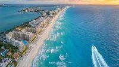
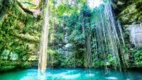
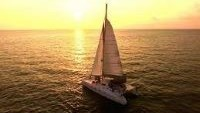
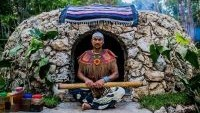
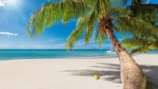
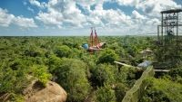
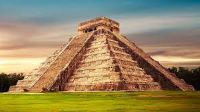
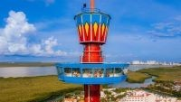

Informação
Cancun ou Cancún é uma cidade fundada a 20 de Abril de 1970, que fica na costa do estado de Quintana Roo, no México, em uma península que se tornou um dos centros turísticos mais importantes do México, tendo conseguido preservar suas belezas naturais e sua cultura ancestral, representada principalmente em cidades maias, como Tulum, Uxmal ou Chichén Itzá, fundadas no período pré-colombiano.
O local foi especialmente projetado para ser um dos maiores pontos turísticos do México. Em razão disso, foram feitos grandes investimentos em infraestrutura e os hotéis da cidade são especialmente preparados para receber turistas de todo o mundo. Em Cancun existem cerca de 22 quilômetros de praias de areia fina, divididos entre a lagoa e o mar. As ruínas, as praias, a vegetação, os parques cheios de espetáculos de entretenimento, o clima, a fauna marinha e a estrutura hoteleira fazem de Cancun um dos destinos turísticos mais visitados do México.
Polpulação total: 628.306 hab.
Fuso horário: -6h.
Código postal: 77500–77539
Top 10 de coisas para fazer em Cancun
| #1 | Explore a zona de hoteis de Cancun |  |
| #2 | Visite o centro de cancun | |
| #3 | Vá nadar em cenotes |  |
| #4 | Vá velejar ao pôr do sol |  |
| #5 | Participe numa cerimónia Temazcal |  |
| #6 | Visite as melhores praias de Cancun |  |
| #7 | Experimente um passeio zipeline pela selva |  |
| #8 | Visite as ruinas Maias de Chichén Itzá |  |
| #9 | Um volta na torre Escénica |  |
| #10 | Fazer compras no mercado 28 |